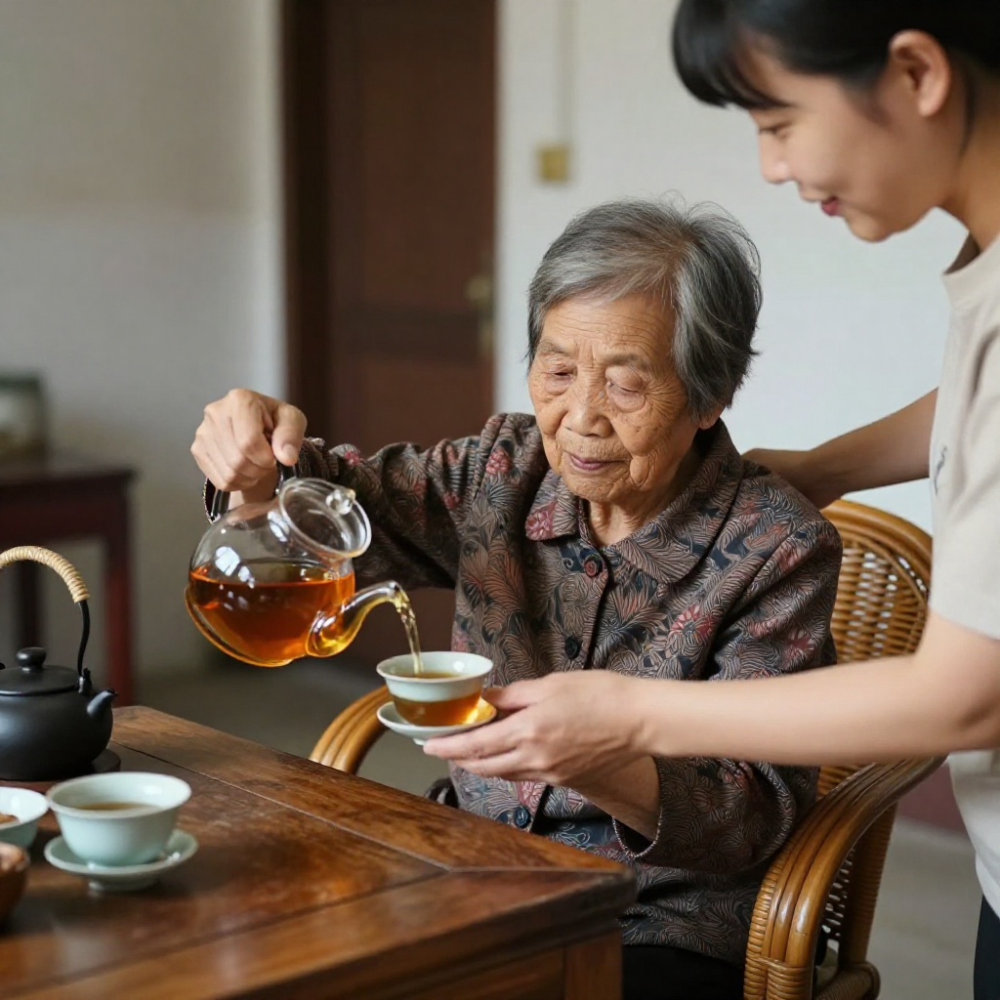
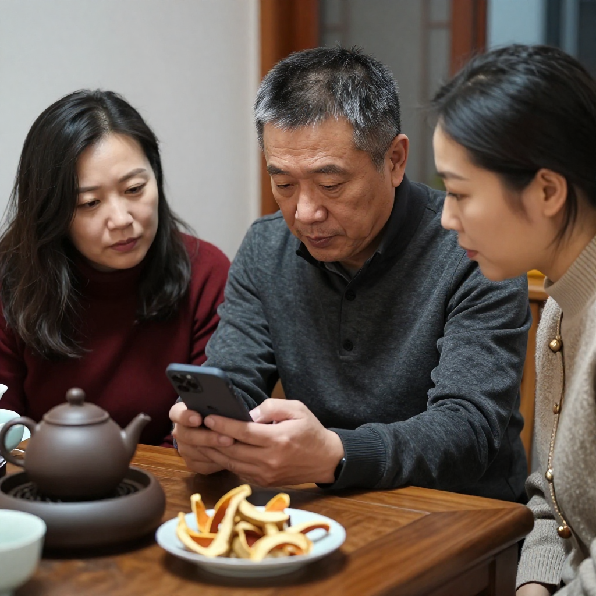
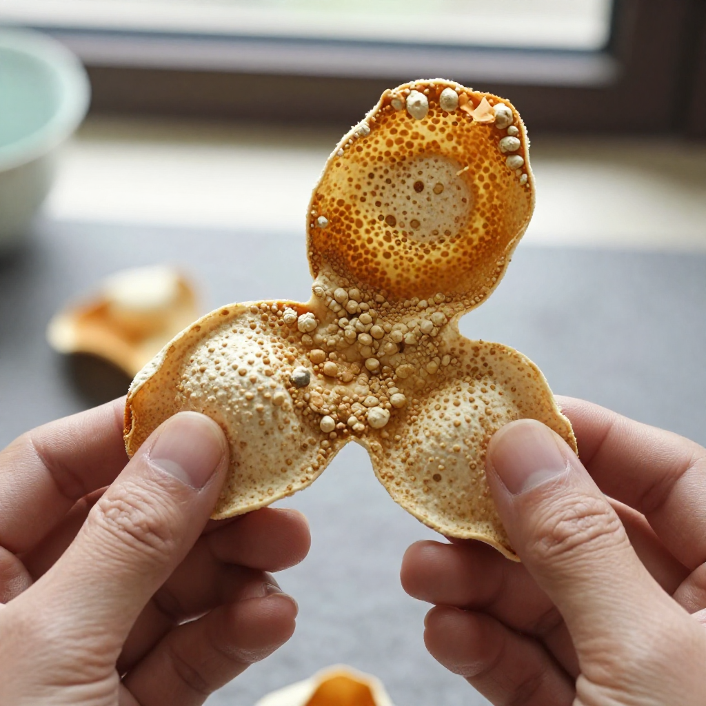
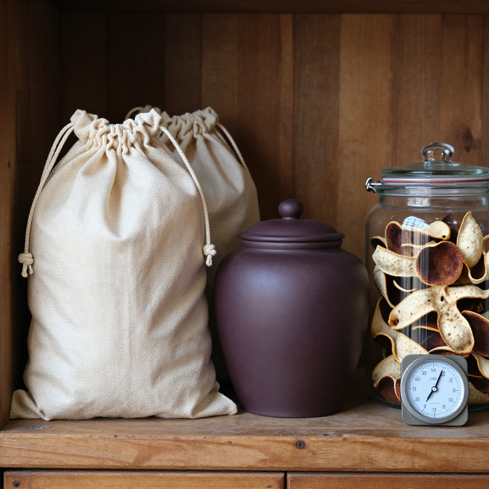

中秋剛過，國慶假期又到了門口。新會陳皮村南門牌坊G04這邊，滢滢姐把最後一籮新皮收進陰涼處，鎖好門，回了一趟大良外婆家。客廳茶几上，茶局已經擺開。
她放進飄逸杯的，是一片十五年的新會陳皮。熱水一沖，陳香順着茶煙裊裊升起。
一、節後茶桌，陳皮飄香

「呢片皮好啊。舊年你爸生日嗰日你帶嚟嗰片，都係呢個味。」
外婆坐在藤椅上，手裡還捏着早上沒吃完的月餅，眼眯眯地望着飄逸杯裡慢慢轉色的茶湯。
「外婆，呢片係舊年中秋前喺陳皮村買嘅，十五年。當時覺得貴，唔捨得開封，就留住等今年中秋先攞出嚟。」
「十五年嘅皮，陳香就係唔同。你睇呢個湯色，紅到發亮，飲落喉嚨係潤嘅，唔會乾。」
滢滢姐笑着說，今年預售季她又在陳皮村訂了一箱新柑，等這批皮開了，送一部分過來給外婆存着。
二、表哥從深圳帶回的新消息

話音剛落，表哥從深圳回來了，手裡還提着一袋各地特產。表哥做藥材生意，對陳皮市場一直有關注。
「妹，你知唔知，新會啲柑今年要逐塊田核定產量喇。」
他把手機遞過來。新會區農業農村局今年組織了新會柑鮮果產量申報核定專題培訓，種植戶須分別在7、8、9月每月20日前完成產量申報，數據一經提交不可更改；10月開始，區、鎮、村三級幹部會落田做現場核定，確保申報數字與實際產量相符。
「以前市場上想點寫都得，而家逐塊田鎖產量，虛標產量、銷量嗰啲亂象就難搞喇。呢個係新會陳皮數字化溯源體系嘅關鍵一步。」
「難怪今年預售季每一盒都掛溯原始碼。」滢滢姐說。她還提到另一條消息：廣州商品交易所首筆陳皮跨境交易最近落地，由新會企業邑祥陳皮供貨，走的是「數字交易＋金融賦能＋溯源倉儲」的全鏈路，貨權和貨款同步交割。目前新會陳皮全產業鏈總產值已達283億元。
「陳皮呢樣嘢，本來就係老祖宗留落嚟嘅好東西。以前清宮都點名要新會嘅陳皮入藥，可見佢嘅價值。」
三、姑媽學辨年份：油室、湯色、香氣層次

姑媽在一旁聽得認真，忍不住插話。
「講起年份，我而家去市場買陳皮都怕。前幾日見到一罐標『二十年陳皮』，價錢先二百幾，我一看嗰隻皮顏色深到發黑，攞起嚟聞，香味又淡，就知有問題。」
滢滢姐點頭：「姑媽您這個感覺很準。」真正二十年自然乾倉陳化的新會陳皮，打開容器那一瞬間，陳香是撲鼻的，而且香氣層次分明——有果香的底子、陳香的厚重，還有一點木質的沉穩。年份短的皮，要麼果香太重、辛辣刺鼻，要麼顏色深但香氣悶，那是濕倉做舊的。
「咁點判斷係咪真正嘅新會皮？」
滢滢姐拿起茶几上的一片皮，指着給姑媽看：「您看這個油室。」她把陳皮翻過來，對着窗口的光線，「新會茶枝柑的油室密密麻麻，凹下去的小點很明顯，這種皮含的揮發油種類多，泡茶才有力。外地皮油室稀疏，肉眼看都不明顯。買皮的時候拿起來對着光看油室，十拿九穩。」
姑媽笑着點頭：「那我記住了，下次去市場就帶個放大鏡。」全家人都笑了。
四、散戶的皮，怎樣才存得住、認得出

茶過三巡，外婆突然問：「滢滢，你上次講陳皮村嗰邊有溯源系統，係咪可以掃碼睇到呢片皮係邊個種、存喺邊個倉？」
「可以啊外婆。」滢滢姐拿出電話，翻出之前收藏的頁面，「呢片十五年嘅皮，我掃碼睇過，由種植記錄到加工過程，再到入倉陳化嘅時間，全部都有。而家陳皮村嘅標準倉儲中心仲有監管倉認證，整條鏈都係透明嘅。」
「咁我哋呢啲散戶點算？自己存嘅皮，存個十年八年，以後仲有冇人認？」
滢滢姐想了想：「姑媽，自己存的皮，關鍵是存放條件要跟上。最好用棉布袋或者紫砂罐裝着，放在乾燥通風的地方，避免串味。平時沒事翻一翻，看到有蟲蛀或者潮濕的跡象就及時處理。自己存的好皮，只要保存得當，年份到了，一樣值錢。」
外婆點點頭：「呢個就同教細路一樣，用心照料，自然有好結果。陳皮係咁，做人亦都係咁。」
五、月光下的陳皮情
不知不覺，月亮已經升起來了。客廳的窗簾透進柔和的月光，茶几上的陳皮茶還冒着熱氣。
「滢滢，我記得你細個嗰陣，最憎就係陳皮泡茶嗰陣味，話又苦又澀，點都唔肯飲。」
「係啊外婆，嗰時細，唔識好嘢。而家先知，呢啲歲月轉化出嚟嘅味道，唔係苦，係厚。」
表哥接話：「這就是陳皮有意思的地方。新皮辛辣衝，放幾年就柔和了，放二十年三十年，就成了寶貝。市場上有句話叫『一兩陳皮一兩金，百年陳皮勝黃金』，說的就是這個道理。時間，是陳皮最好的工藝。」
滢滢姐給外婆續了一杯陳皮茶，看着茶杯裡紅濃透亮的茶湯，輕聲說：「外婆，呢杯茶敬您，多謝您一直教我們呢啲老道理。」
「都多謝你哋呢啲細路，仲記得中秋返嚟陪我。等下一批新皮到咗，記得留幾片畀我，我要存住等曾孫輩大個咗再用。」
滿堂笑聲，在中秋後的月光裡迴盪。
常見問題
十五年新會陳皮應該怎麼泡？取3克左右（約一片的三分之一），用100度滾水，前三道坐杯30秒以上讓內含物質慢慢滲出。十五年皮基本不用洗茶，第一道就是精華；泡完的皮絲還可以再煮一壺。
怎麼一眼看出是不是真正的新會皮？對着光看油室。新會茶枝柑的油室密密麻麻、凹點明顯；外地皮油室稀疏，肉眼不明顯。再配合聞香——真皮陳香撲鼻、層次分明，做舊皮顏色深但香氣悶。
散戶自己存的陳皮，怎樣才算存得好？棉布袋或紫砂罐盛裝，放在乾燥、通風、陰涼處，避免與香水、油煙等強烈氣味同放。新皮頭三年每年至少翻曬兩次，五年以上適時檢查，十年以上密封存放、定期檢查即可。
新會柑產量申報核定是做什麼的？由新會區農業農村局組織，種植戶須在7、8、9月每月20日前完成線上產量申報，數據提交後不可更改；10月起區、鎮、村三級幹部落田現場核定，從源頭杜絕虛標產量、銷量等亂象。
陳皮跨境交易是怎麼回事？廣州商品交易所首筆陳皮跨境交易已落地，走「數字交易＋金融賦能＋溯源倉儲」全鏈路，依託監管倉為每批陳皮鎖定產地、年份、檢測與倉儲數據，並通過銀行完成合規跨境結算。
國慶來新會陳皮村，能看到什麼？可以看到正在入庫的新皮、標準化監管倉和溯源展示中心；新會陳皮村南門牌坊G04滢滢姐的店裡常年備着熱茶，可當面看皮、免費試喝。
結語
月圓陳香濃，歲月釀好皮。中秋已過，但陳皮的故事才剛剛開始——十月起新會柑要落田核定產量，跨境貿易的新鏈路也打通了，這些變化最終都會落到一杯茶裡：年份真不真、產地對不對，喝一口就知道。
想親手摸一摸今年的新皮、對着光看一次油室，國慶來新會陳皮村南門牌坊G04找滢滢姐坐坐。想了解今年產區標準化的整體進展，看這篇《陳皮熱點日報：新會柑採收季臨近，產業標準化提速》；想複習辨別真假的完整四招，翻翻這篇《四招教你辨別新會陳皮真假》。
下期預告：滢滢姐會把今年預售季拿到的幾款不同年份的新皮擺在一起，從香氣、湯色到油室做一次橫向對比——同一棵樹，三年、五年、十年到底差在哪裡，一次講清楚。